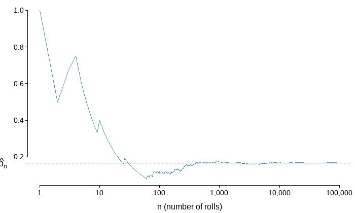
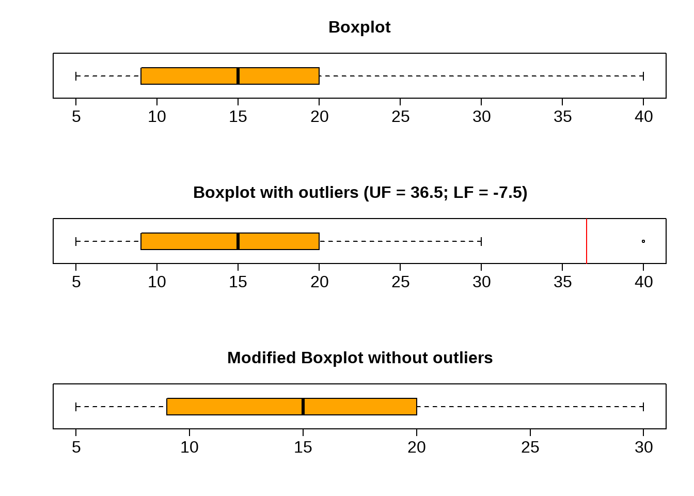
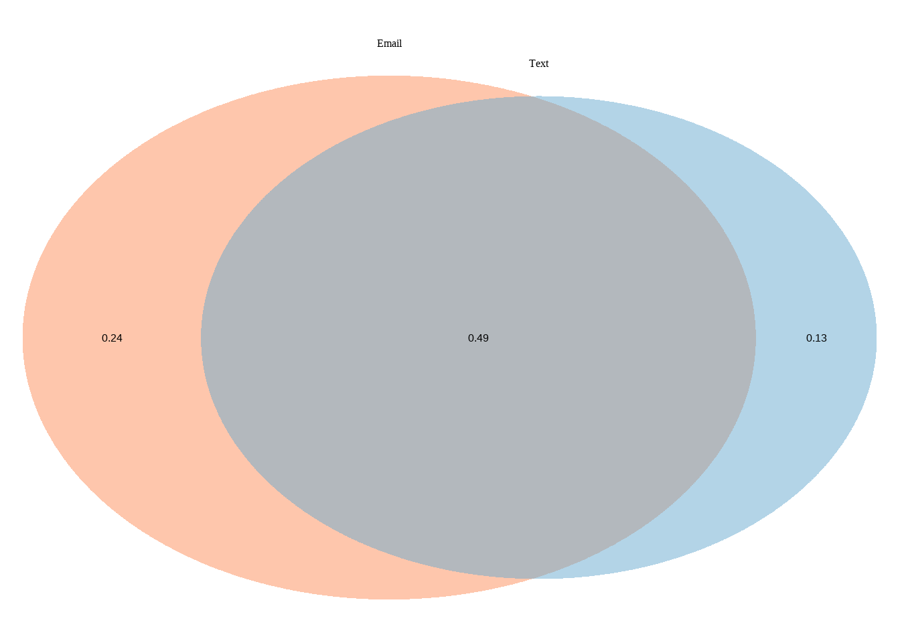
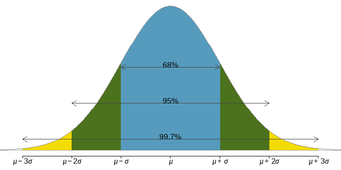
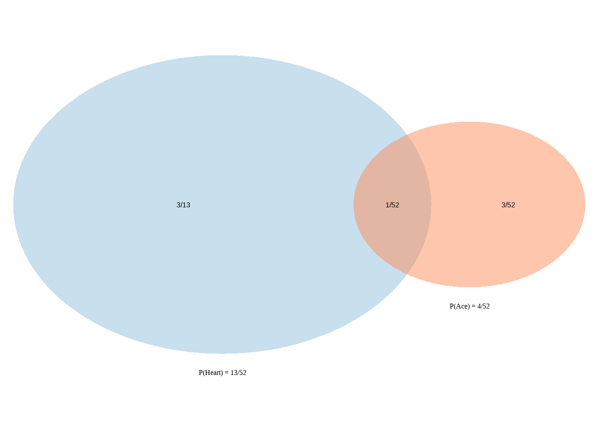

Chapter 5 Discrete Probability Distributions
Learning Outcome
| Compute measures of expectation and variation for a discrete probability distribution. |
In this chapter, we will extend the concept of relative frequencies to understand and calculate the probability of occurrence of a random event. We will also learn about normal distribution, its properties, and methods to calculate probabilities of random events that are described by this distribution.
5.1 Definitions
An event is any collection of results or outcomes of a procedure. For example, tossing a coin is an event with possible outcomes heads and tails.
A simple event is an event that has one outcome. For example, births of \(2\) girls followed by a boy is a simple event because the only possible outcome is \(\{ggb\}\).
However, births of \(2\) girls and a boy is an event that has three possible outcomes \(\{ggb, gbg, bgg \}\).
A sample space for a procedure consists of all possible simple events. For example, with births of three children, the sample space consists of eight different simple events \(\{ bbb, bbg, bgb, bgg, gbb, gbg, ggb, ggg\}\)
An event is random if individual outcomes of it are unpredictable, meaning they have no apparent pattern of occurrence, but there is nonetheless a predictable distribution (i.e. the frequencies) of those different outcomes over a large number of repetitions of the event.
The probability of any outcome of a random event can be defined as the proportion of times the outcome would occur in a very long series of repetitions.
The probability is defined as a proportion, and it always takes values between \(0\) and \(1\) (inclusively). It may also be displayed as a percentage between \(0\%\) and \(100\%\).
- \(0\%: \text{event is impossible}\)
- \(100\%: \text{event is certain}\)
THEORETICAL VERSUS EXPERIMENTAL PROBABILITY
The Theoretical probability is the likelihood of occurring of an event. It is simply the ratio of the number of desired outcomes and the number of all possible outcomes.
The experimental probability is an estimate of the likelihood of occurring of an event based on repeated trials.
The subjective probability is an estimate of the likelihood of occurring of an event based on someone’s belief.
LAW OF LARGE NUMBERS
| Consider: Rolling a 1 of a die |
| If the sample space of a random experiment consists of \(n\) equally likely outcomes and an event \(E\) consists of \(m\) of those outcomes, then |
| \[\text {Theorerical Probability} : P(E) = \frac{\text{number of outcomes in the event}(m)}{\text{total number of outcomes}(n)}\] |
| Let \(\hat{p_n}\) be the proportion of outcomes that are \(1\) after the \(n\) rolls. As the number of rolls \((n)\) increases, \(\hat{p_n}\) (the relative frequency of rolls, or the experimental probability) will converge to the theoretical probability of rolling a \(1,\space p = 1/6.\) The figure shows the convergence for \(100,000\) die rolls. |
| The tendency of \(\hat{p_n}\) to stabilize around \(p\), i.e. the tendency of the relative frequency to stabilize around the true probability, is described by the Law of Large Numbers. |
| As more observations are collected, the observed proportion \(\hat{p_n}\) of occurrences with a particular outcome after \(n\) trials converges to the true probability \(p\) of that outcome. |
| Die Rolls Simulation |
|  |
| The figure shows the fraction of die rolls that are \(1\) at each stage in a simulation. The relative frequency tends to get closer to the probability \(1/6 \approx 0.167\) as the number of rolls increases. |
Example: Calculating Classical Probabilities
Assuming that births of boys and girls are equally likely, find the probability of getting children of all of the same gender when three children are born.
Recall the sample space of three children: \(\{ bbb, bbg, bgb, bgg, gbb, gbg, ggb, ggg \}\), includes eight equally likely outcomes, and there are exactly two outcomes in which three children are of the same gender: \(\{ bbb, ggg \}\) .
\[ P(\text{ three children of the same gender}) = \dfrac{2}{8} = \dfrac{1}{4} = 0.25 \]
5.2 Finding Probabilities
This section presents the addition and multiplication rules of calculating probabilities.
5.2.1 Disjoint or mutually exclusive outcomes
Two events or outcomes are called disjoint or mutually exclusive if they cannot both happen in the same trial.
When rolling a die, the outcomes \(1\) and \(2\) are disjoint, and we compute the probability that one of these outcomes will occur by adding their separate probabilities: \[P(1 \text{ or } 2)=P(1)+P(2)=1/6+1/6=1/3\]
What about the probability of rolling a \(1, 2, 3, 4, 5, \ or \ 6\) ?
\[ \begin{array}{ll} P(1 \text{ or } 2 \text{ or } 3 \text{ or } 4 \text{ or } 5 \text{ or }6) = P(1)+P(2)+P(3)+P(4)+P(5)+P(6) \\ =1/6+1/6+1/6+1/6+1/6+1/6 =1 \end{array} \]
It is no surprise that the probability is \(1\), since it is certain that one of the six outcomes must occur.
ADDITION RULE OF DISJOINT OUTCOMES
| If \(A_1,...,A_k\) represent \(k\) disjoint outcomes, then the probability that one of them occurs is given by: |
| \[P(A_1\text{ or }A_2 \text{ or ... or }A_k)=P(A_1)+P(A_2)+...+P(A_k)\] |
Example: Consider a standard deck of cards.
\[ \text {4 suits} \left\{ \begin{array}{ll} \text{hearts: } \color{red}{\heartsuit} \\ \text{diamonds: } \color{red}{\diamondsuit} \\ \text{clubs: } \spadesuit \\ \text{spades: } \clubsuit \end{array} \right. \] \[\text{13 cards in each suit: } Ace, 2, 3, 4, 5, 6, 7, 8, 9, 10, Jack, Queen, King\] One card is dealt from a well shuffled deck.
\[ \begin{align} P(\text{the card is an ace or a king}) &= P(\text{it's an ace})+P(\text {it's a king}) \\ & = 4/52+4/52 \\ & = 8/52 \\ & = 2/13 \end{align} \]
| Venn Diagram - a diagram style to illustrate simple set relationships in probability. |
Venn Diagram | When events are disjoint
\[ \begin{align} P(\text{the card is an ace or a king}) &= P(\text{it's an ace})+P(\text {it's a king}) \\ & = 4/52+4/52 \\ & = 2/13 \end{align} \]

## (polygon[GRID.polygon.385], polygon[GRID.polygon.386], polygon[GRID.polygon.387], polygon[GRID.polygon.388], text[GRID.text.389], text[GRID.text.390], text[GRID.text.391], text[GRID.text.392])5.2.2 Probabilities when events are NOT disjoint or mutually exclusive
\[ \begin{align} & P(\text{the card is an ace or a heart}) \\ &= P(\text{it's an ace})+P(\text {it's a heart})-P(\text{it's an ace & heart}) \\ & = 4/52+13/52 - \underbrace{1/52}_{\text {adjustment made to avoid double-counting of the ace of hearts}} \\ & = 16/52 \\ & = 4/13 \end{align} \]
Venn Diagram | When events are not disjoint
\[ \begin{align} & P(\text{the card is an ace or a heart}) \\ & = P(\text{it's an ace})+P(\text {it's a heart})-P(\text{it's an ace AND heart}) \\ & = 4/52+13/52 - 1/52 = 16/52 \end{align} \]
FALSE (polygon[GRID.polygon.393], polygon[GRID.polygon.394], polygon[GRID.polygon.395], polygon[GRID.polygon.396], text[GRID.text.397], text[GRID.text.398], text[GRID.text.399], text[GRID.text.400], text[GRID.text.401])GENERAL ADDITION RULE OF PROBABILITIES
\[ \bbox[yellow,5px] {\color{black}{P(A \space or \space B) = P(A) + P(B) - P(A \space and \space B)}} \] where \(P(A \text{ and } B)\) is the probability that both events occur.
If \(A\) and \(B\) are mutually exclusive, \(P(A \space and \space B) = 0\)
Therefore,
\[ P(A \space or \space B) = P(A) + P(B)\]
5.2.3 Complement of an event
The complement of event \(A\) is denoted \(A^c\), and \(A^c\) represents all outcomes not in \(A\). \(A\) and \(A^c\) are mathematically related:
\[ \begin{align} & P(A) + P(A^c) = 1 \\ or, \space & P(A^c) = 1 - P(A) \end{align} \]
Example: if an event has chance \(40\%\), then the chance that it doesn’t happen is \(60\%\).
Venn Diagram | Exercise
\[ \begin{align} P(email) &=0.73 \\ P(text) &= 0.62 \\ P(\text {email & text}) &= 0.49 \\ P(\text {only email}) &= 0.73 - 0.49 = 0.24 \\ P(\text{only text}) &= 0.62 - 0.49 = 0.13 \\ P(\text{neither email nor text}) &= 1 - (0.24 + 0.49 + 0.13) = 0.14 \end{align} \]

(polygon[GRID.polygon.402], polygon[GRID.polygon.403], polygon[GRID.polygon.404], polygon[GRID.polygon.405], text[GRID.text.406], text[GRID.text.407], text[GRID.text.408], text[GRID.text.409], text[GRID.text.410]) 5.2.4 Multiplication Rule | for independent processes
If \(A\) and \(B\) represent events from two different and independent processes, then the probability that both \(A\) and \(B\) occur can be calculated as the product of their seprarate probabilities:
\[P(A \text{ and } B) = P(A) \times P(B)\]
Similarly, if there are \(k\) events \(A_1,...,A_k\) from \(k\) independent processes, then the probability they all occur is
\[ \bbox[yellow,5px] { \color{black} {P(A_1\text{ and }A_2 \text{ and ... and }A_k)=P(A_1)\times P(A_2)\times...\times P(A_k)} } \]
Example 1: If a card is randomly drawn from a well-shuffled deck, what is the probability that it is the ace of hearts? [Note: Ace and Hearts are two independent events.]
\[ \begin{align} P(Ace \text{ and } Hearts) &= P(Ace) \times P(Hearts) \\ &= (4/52) \times (13/52) = 1/52 \end{align} \]
Example 2:
About \(9\%\) of people are left-handed. Suppose \(5\) people are selected at random from the US population.
(a) What is the probability that all are right-handed?
(b) What is the probability that all are left-handed?
(c) What is the probability that not all of them are right-handed?
\[ \begin{align} &(a) \space P\text{(All are RH)} = (1-0.09)^5 = 0.624 \\ &(b) \space P\text{(All are LH)} = (0.09)^5 = 0.0000059 \\ &(c) \space P\text{(not all RH)} = 1- P(\text {all RH}) = 1-0.624 = 0.376 \end{align} \]
GENERAL MULTIPLICATION RULE
If \(A\) and \(B\) represent two outcomes or events, then
\[ \bbox[yellow,5px] {\color{black}{P(A \space and \space B) = P(A|B) \times P(B)}} \]
Example 3:
During the smallpox outbreak, \(96.08\%\) of Boston residents were not inoculated, and \(85.88\%\) of the residents who were not inoculated ended up surviving. What is the probability that a resident was not inoculated and lived?
To answer the question, we want to determine \(\text {P(lived and inoculated)}\),
and we are given that,
\[ \begin{align} P(\text{lived | not inoculated}) &= 0.8588 \\ P(\text {not inoculated}) &= 0.9608 \end{align} \]
Among the \(96.08\%\) of people who were not inoculated, \(85.88\%\) survived:
\[ P(\text {lived and not inoculated}) = 0.8588 \times 0.9608 = 0.8251 \]
This is equivalent to the General Multiplication Rule.
5.2.5 Marginal and joint probabilities
If a probability is based on a single variable, it is a marginal probability. The probability of outcomes for two or more variables or processes is called a joint probability.
Exercise: Calculating Probabilities with a Contingency Table:
Table: College enrollment and parents’ educational attainment
\[ \begin{array} {l|cc|r} & \text{parents: degree} & \text{parents: no degree} & \text{total} \\ \hline \text {teen: college} & 231 & 214 & 445 \\ \text {teen: no college} & 49 & 298 & 347 \\ \hline \text {total} & 280 & 512 & 792 \end{array} \]
a) Finding Marginal and Joint Probabilities:
\[ \begin{array} {l|cc|c} & \text{parents: degree} & \text{parents: no degree} & \text{marginal} \\ \hline \text {teen: college} & \color{red}{0.29} & \color{red}{0.27} & \color{blue}{0.56} \\ \text {teen: no college} & \color{red}{0.06} & \color{red}{0.38} & \color{blue}{0.44} \\ \hline \text {marginal} & \color{blue}{0.35} & \color{blue}{0.65} & 1.00 \end{array} \]
\[ \begin{align} &\color{blue}{\text{Marginal Probability: }} P(\text{teen: college})=\frac{445}{792}=0.56 \\ &\color{red}{\text{Joint Probability: }} P(\text {teen: college and parents: no degree})=\frac{214}{792}=0.27 \end{align} \]
b) Finding Conditional Probability:
Conditional Probability
The conditional probability of the outcome of interest \(A\) given condition \(B\) is computed as the following:
\[P(A|B) = \frac{P(A \text{ and } B)}{P(B)}\]
\[ \begin{array} {l|cc|r} & \text{parents: degree} & \text{parents: no degree} & \text{total} \\ \hline \text {teen: college} & 231 & 214 & 445 \\ \text {teen: no college} & 49 & 298 & 347 \\ \hline \text {total} & 280 & 512 & 792 \end{array} \]
\[ \begin{align} P(\text {teen college | parents degree}) &= \frac{231/792}{280/792} = 0.825 \\ P(\text {teen college | parents no degree}) &= \frac{214/792}{512/792} = 0.418 \\ P(\text {teen no college | parents degree}) &= \frac{49/792}{280/792} = 0.175 \\ P(\text {teen no college | parents no degree}) &= \frac{298/792}{512/792} = 0.582 \end{align} \]
c) Condition of Independence
Verify whether one of the following equations holds:
\[ \begin{align} P(A|B) &= P(A) \tag 1 \\ P(A \space and \space B) &=P (A) \times P(B) \tag 2 \end{align} \]
Check if the equality holds in the following equation:
\[ \begin{align} P(\text{teen college | parent degree})&\stackrel{?}{=} P(\text {teen college}) \\ 0.825 &\ne 0.560 \end{align} \] Because both sides are not equal, teenager college attendance and parent degree are not independent.
Two events are mutually exclusive
If \(A\) and \(B\) are mutually exclusive events, then they cannot occur at the same time. If asked to determine if events \(A\) and \(B\) are mutually exclusive, verify one of the following equations holds:
\[ \begin{align} P(\text{A and B})&= 0 \tag 1 \\ P(\text{A or B}) &= P(A)+P(B) \tag 2 \end{align} \]
If the equation that is checked holds true, \(A\) and \(B\) are mutually exclusive. If the equation does not hold, then \(A\) and \(B\) are not mutually exclusive.
At Least One
A poker hand (5 cards) is dealt from a well shuffled deck. What is the chance that there is at least one ace in the hand?
\[ \begin{align} &P(\text{at least one ace}) \\ &=1-P(\text{no aces}) \\ &=1-(48/52) \times (47/51) \times (46/50) \times (45/49) \times (44/48) \\ &=34.11\% \end{align} \]
5.3 Probability Distributions
DEFINITIONS
A random variable is a numerical measure of an outcome from a random experiment. It has a single numerical value, determined by chance, for each outcome of an event. We often use a capital letter such as \(X\) to stand for a random variable.
Let \(X\) be a random variable representing all possible outcomes of rolling a six-sided die once. Find the given probability:
\(1. P(X=4)\)
\(2. P(X\le 4)\)
\(3. P(X>4)\)
\(4. P(3 \le X \le 6)\)
A discrete random variable has a collection of values that is finite or countable, such as number of tosses of a coin before getting heads.
A continuous random variable has infinitely many values, and the collection of values is not countable, such as body temperature.
A probability distribution is a description that gives the probability for each value of the random variable. It can be expressed as a table or graph, or formula.
Probability Distribution: Requirements
There is a numerical (not categorical) random variable \(x\), and its number values are associated with corresponding probabilities.
\(\sum P(x)=1\), where \(x\) assumes all possible values.
\(0 \le P(x) \le 1\) for every individual value of the random variable \(x\).
\[ \begin{array}{c|lcr} \text{x: number of heads} \\ \text {when two coins are tossed} & P(x) \\ \hline 0 & 0.25 \\ 1 & 0.50 \\ 2 & 0.25 \end{array} \]
- Find the probability of getting two heads out of two tosses?
- Find the probability of getting at least one head out of two tosses?
- Find the probability of getting at most one head out of two tosses?
5.4 Parameters of a Probability Distribution
Mean \(\mu\) of a probability distribution
\(\mu = \sum [x \cdot P(x)]\)
Variance \(\sigma^2\) for a probability distribution
\(\sigma^2 = \sum[(x-\mu)^2 \cdot P(x)] = \sum[x^2 \cdot P(x)]-\mu^2\)
Standard deviation \(\sigma\) for a probability distribution
\(\sigma = \sqrt{\sum[x^2 \cdot P(x)]-\mu^2}\)
Expected Value
In probability theory, the expected value of a random variable, intuitively, is the long-run average value of repetitions of the experiment it represents. For example, the expected value in rolling a six-sided die is \(3.5\), because the average of all the numbers that come up in an extremely large number of rolls is close to \(3.5\). The law of large numbers states that the arithmetic mean of the values almost surely converges to the expected value as the number of repetitions approaches infinity.
The expected value of a discrete random variable is the probability-weighted average of all possible values. In other words, each possible value the random variable can assume is multiplied by its probability of occurring, and the resulting products are summed to produce the expected value. The same principle applies to an absolutely continuous random variable, except that an integral of the variable with respect to its probability density replaces the sum.
The expected value is a key aspect of how one characterizes a probability distribution; it is one type of location parameter. By contrast, the variance is a measure of dispersion of the possible values of the random variable around the expected value. The variance itself is defined in terms of two expectations: it is the expected value of the squared deviation of the variable’s value from the variable’s expected value.
Expected value of a discrete random variable
If \(X\) takes outcomes \(x_1, x_2,\cdots,x_m\) with probabilities \(p_1, p_2,\cdots, p_m\) the expected value of \(X\) is the sum of each outcome multiplied by its corresponding probability:
\[ \begin{align} E(X) &= \mu_X = x_1 \times p_1 + x_2 \times p_2 +\cdots+x_m \times p_m \\ &= \sum^{m}_{i=0}(x_i \times p_i) \end{align} \]
Example: \(\text{ Random Variable } X: \text{the number of spots on one roll of a die}\)
Probability distribution table for \(X\)
\[ \begin{array}{c|c|c|c|c|c|c} x & 1 & 2 & 3 & 4 & 5 & 6\\ \hline P(x) & 1/6 & 1/6 & 1/6 & 1/6 & 1/6 & 1/6 \end{array} \]
\[ E(X) = 1 \cdot (1/6) + 2 \cdot (1/6) + 3 \cdot (1/6) + 4 \cdot (1/6) + 5 \cdot (1/6) + 6 \cdot (1/6) = 3.5 \]
Variability in Discrete Random Variables
Variance and standard deviation of a discrete random variable
If \(X\) takes outcomes \(x_1, x_2, \cdots ,x_m\) with probabilities \(p_1, p_2, \cdots ,p_m\) and expected value \(\mu_x = E(X),\) then to find the standard deviation of \(X\), we first find the variance and then take its square root.
\[ \begin{align} Var(X)=\sigma^2_x &= (x_1 - \mu_x)^2 \times p_1 + (x_2 - \mu_x)^2 \times p_2 + \cdots + (x_m - \mu_x)^2 \times p_m \\ &= \sum^m_{i=1}(x_i-\mu_x)^2 \times p_i \\ \\ SD(X) = \sigma_x &= \sqrt{\sum^m_{i=1}(x_i-\mu_x)^2 \times p_i} \\ \\ \text {From the above example, } \\ \\ Var(X)=\sigma^2_x &= [(1 - 3.5)^2 + (2 - 3.5)^2 + \cdots + (6 - 3.5)^2]\times (1/6) \\ &= 2.92 \\ \\ SD(X) = \sigma_x &= \sqrt{2.92} = 1.71 \end{align} \]
Exercise 1: Coin Toss
\[ \begin{array}{c|lcr} x \text{: number of heads} \\ \text {when two coins are tossed} & P(x) \\ \hline 0 & 0.25 \\ 1 & 0.50 \\ 2 & 0.25 \end{array} \] Calculate expected value/average number of heads and SD from three tosses.
Solution:
\[\begin{align} E(X) &= 0 \times .25 + 1 \times .50 + 2 \times .25 = 1 \\ VAR(X) &= (0 - 1)^2 \times .25 + (1 - 1)^2 \times .50 + (2 - 1)^2 \times .25 \\ &= .5 \\ SD(X) &= \sqrt {.5} \\ & = .7071 \end{align}\]
Exercise 2: Be A Better Bettor
\[ \begin{array}{c|c|lcr} \text{Roulette} \\ \text{Event} & x & P(x) \\ \hline \text{Lose} & - \$ 5 & \frac{37}{38} \\ \text{Win} & \$175 & \frac{1}{38} \end{array} \]
\[ \begin{array}{c|c|lcr} \text{Craps Game} \\ \text{Event} & x & P(x) \\ \hline \text{Lose} & - \$ 5 & \frac{251}{495} \\ \text{Win} & \$5 & \frac{244}{495} \end{array} \]
Which of the bets is better in the sense of producing higher expected value?
Solution:
Roulette
\[ E(X) = (- \$ 5) \cdot (\frac{37}{38}) + (\$175) \cdot (\frac{1}{38}) = -\$.26 \]
Craps Game
\[ E(X) = (- \$ 5) \cdot (\frac{251}{495}) + (\$5) \cdot (\frac{244}{495}) = -\$.07 \]
\(\therefore\) Craps Game seems to be a better bet since it has the higher expected return. However, both games will generate profit for the casino owner.
5.5 Binomial Probability Distribution
A binomial probability distribution results from a procedure that meets the following requirements:
The procedure has a fixed number of trials (A trial is a single observation).
The trials must be independent, meaning that the outcome of any individual trial doesn’t affect the probabilities in the other trials.
Each trial must have all outcomes classified into exactly two categories, commonly referred to as success and failure.
The probability of a success remains the same in all trials.
Notation for binomial probability distribution
\[ \begin{align} S, F &: \text {success and failure denote the two possible outcomes from each trial.} \\ P(S) &= p \text{ probability of success in one of the } n \text { trials} \\ P(F) &= q = 1 - p \text{ probability of failure in one of the } n \text { trials} \\ n &: \text { number of trials} \\ x &: \text {number of successes in } n \text { trials}; 0 \le x \le n \\ \end{align} \]
Probability Distribution of \(3\) independent Trials
Probability distribution of the number of successes \((x)\) in \(n = 3\) independent success/failure trials, each of which is a success with chance \(p = \dfrac{1}{6}.\)
\[ \begin{array}{rclr} \text {No. of successes } (x=k) & \text{pattern} & \text{chance of pattern} & P(x) \\ \hline 0 & FFF & (5/6) \cdot (5/6) \cdot (5/6) & 1 \cdot (5/6)^3=0.5787 \\ \hline 1 & SFF & (1/6) \cdot (5/6) \cdot (5/6) & \\ & FSF & (5/6) \cdot (1/6) \cdot (5/6) & \\ & FFS & (5/6) \cdot (5/6) \cdot (1/6) & 3 \cdot (1/6) \cdot (5/6)^2 = 0.3472 \\ \hline 2 & SSF & (1/6) \cdot (1/6) \cdot (5/6) & \\ & SFS & (1/6) \cdot (5/6) \cdot (1/6) & \\ & FSS & (5/6) \cdot (1/6) \cdot (1/6) & 3 \cdot (1/6)^2 \cdot (5/6) = 0.0694 \\ \hline 3 & SSS & (1/6) \cdot (1/6) \cdot (1/6) & 1 \cdot (1/6)^3 = 0.0046 \\ \hline & & & \sum = 1.0000 \end{array} \]
Binomial Probability Distribution Formula
Let’s reconsider the table above.
\[ \begin{array}{rclr} \text {No. of successes } (x=k) & \text{pattern} & \text{chance of pattern} & P(x) \\ \hline 0 & FFF & (5/6) \cdot (5/6) \cdot (5/6) & \underbrace{1}_{\displaystyle \binom{3}{0}} \cdot \underbrace{(5/6)^3}_{\displaystyle (1/6)^0 \cdot (5/6)^3} = 0.5787 \\ \hline 1 & SFF & (1/6) \cdot (5/6) \cdot (5/6) & \\ & FSF & (5/6) \cdot (1/6) \cdot (5/6) & \\ & FFS & (5/6) \cdot (5/6) \cdot (1/6) & \underbrace{3}_{\displaystyle \binom{3}{1}} \cdot \underbrace{(1/6) \cdot (5/6)^2}_{\displaystyle (1/6)^1 \cdot (5/6)^2} = 0.3472 \\ \hline 2 & SSF & (1/6) \cdot (1/6) \cdot (5/6) & \\ & SFS & (1/6) \cdot (5/6) \cdot (1/6) & \\ & FSS & (5/6) \cdot (1/6) \cdot (1/6) & \underbrace{3}_{\displaystyle \binom{3}{2}} \cdot \underbrace{(1/6)^2 \cdot (5/6)^1}_{\displaystyle (1/6)^2 \cdot (5/6)^1} = 0.0694 \\ \hline 3 & SSS & (1/6) \cdot (1/6) \cdot (1/6) & \underbrace{1}_{\displaystyle \binom{3}{3}} \cdot \underbrace{(1/6)^3}_{\displaystyle (1/6)^3 \cdot (5/6)^0} = 0.0046 \\ \hline & & & \sum = 1.0000 \end{array} \]
| The probability of \(k\) successes in \(n\) independent trials: |
| \[ \begin{align} \displaystyle P(x) &= \binom{n}{x}(p)^x(1-p)^{n-x} \\ &= \underbrace{\dfrac{n!}{x!(n-x)!}}_{\text{The number of outcomes with} \\ \text{exactly x successes among n trials }} \times \underbrace{(p)^x(1-p)^{n-x}}_{\text{ The probability of x successes among} \\ \text{ n trials for any particular order}} \end{align} \] where, |
| \[ \begin{cases} x = 0,1,2,......,n \\ n = \text{ number of trials} \\ k = \text{ number of successes among } n \text{ trials} \\ p = \text{ probability of success in any one trial} \end{cases} \] |
When \(k = 0,\) the chance of no successes (in other words, the chance of \(n\) failures in a row) is
\[ \frac{n!}{0!(n)!}p^0(1-p)^{n} = (1-p)^n \]
Question: What is the probability that the first success will be observed after \(n\) trials?
This means the first success is observed on \((n+1)^{th}\) trial.
\[ \underbrace{F}_{ 1^{st} } FF.......FF \underbrace{F}_{ n^{th} } \underbrace{S}_{ n+1 } \\ \underbrace{FFF.......FFF}_{ \displaystyle \binom{n}{0} (p)^0(1-p)^n } \underbrace{S}_{\times p } \\ = (1-p)^n \cdot p \\ \text{ (This is called geometric distribution.)} \]
Sampling with Replacement
A random number generator draws at random with replacement from the ten digits \(0,1,2,3,4,5,6,7,8,9. \space\) Run the generator 20 times.
Find the chance that \(0\) appears once.
Solution:
\[binomial: n=20, p = 0.1, k = 1 \implies \binom{20}{1}(0.1)^1(0.9)^{19} = 0.2702\]
Find the chance that \(0\) appears at most once.
Solution:
\[binomial: n=20, p = 0.1, k = (0,1) \\ \implies \binom{20}{0}(0.1)^0(0.9)^{20} + \binom{20}{1}(0.1)^1(0.9)^{19} = 0.3917\]
Find the chance that \(0\) appears more than once.
Solution:
\[binomial: n=20, p = 0.1, k = (2,3,...,20) \\ \implies 1-P(k=0,1)= (1- 0.3917) = 0.6083.\]
Exercise: Cytomegalovirus (CMV) is a virus that infects one half of young adults. If a random sample of \(10\) young adults is taken, find the probability that between \(30\%\) and \(40\%\) (inclusive ) of those sampled will have CMV.
Solution:
\[\begin{align} P((.3)(10) \le X \le (.4)(10)) &= P(X=3) + P(X=4) \\ &= \binom{10}{3}(.5)^3(.5)^7 + \binom{10}{4}(.5)^4(.5)^6 \\ &= 0.1172 + 0.2051 \\ &= 0.3223 \end{align}\]
5.5.1 Expected Value of the Binomial Distribution
\(X:\) number of successes with probability \(p\) of success on each trial.
Probability distribution table for \(X:\)
\[ \begin{array}{c|c|c|c|c|c|c} x & 1 & 0 \\ \hline P(x) & p & 1-p \end{array} \]
\[ \begin{align} \text{Average successes per trial: } E(X) &= 1 \times p + 0 \times (1-p) = p \\ \text{Expected total successes from } n \text { trials: } E(X) &= n \times [1 \times p + 0 \times (1-p)] = np \end{align} \]
5.5.2 Standard Deviation of the Binomial Distribution
\(X:\) number of successes with probability \(p\) of success on each trial.
Probability distribution table for \(X:\)
\[ \begin{array}{c|c|c|c|c|c|c} x & 1 & 0 \\ \hline P(x) & p & 1-p \end{array} \]
\[ \begin{align} \text {for one trial} \\ SD(X) &= \sqrt{(1-p)^2 \times p + (0-p)^2 \times (1-p)} \\ &= \sqrt{(1-p)^2 \times p + p^2 \times (1-p)} \\ &= \sqrt{p(1-p)(1-p+p)} \\ &= \sqrt{p(1-p)} \\ \text {for } n \text{ trials} \\ SD(X) &= \sqrt{np(1-p)} \end{align} \]
Example: Calculate expected total number of heads from \(100\) tosses
\(X\) is a binomial distributed random variable with parameters \(n=100\) and \(p=0.5\)
\[ \begin{align} P(x=k) &= \binom{100}{k}(0.5)^k(1-0.5)^{100-k}, k = 0,1,2,...,100 \\ \\ E(X) &= 100 \times 0.5 \\ &= 50 \\ \\ SE(X) &= \sqrt{100 \times 0.5 \times 0.5} \\ &= 5 \end{align} \]
Exercise Calculate expected total number of sixes from \(100\) rolls
\(X\) has the binomial distribution with parameters \(n=100\) and \(p=1/6\)
Solution:
\[ \begin{align} P(X=k) &= \binom{100}{k}(1/6)^k(1-1/6)^{100-k}, k = 0,1,2,...,100 \\ \\ E(X) &= 100 \times 1/6 \\ &= 16.7 \\ \\ SE(X) &= \sqrt{100 \times 1/6 \times 5/6} \\ &= 3.73 \end{align} \]
Empirical Rule
Probabilities for falling \(1,\) \(2,\) and \(3\) standard deviations of the mean in a normal distribution.

Linear Transformation of Normal Curve | Standardizing with Z-Scores
Consider a normally distributed random variable \(x\) with mean \(\mu\) and sd \(\sigma\): \(x \tilde \space N(\mu, \sigma)\)
Two-step linear transformation of \(x\)
- subtract \(\mu\) from \(x\)
- divide \((x-\mu)\) by \(\sigma\)
\[\bbox[yellow,5px]{\color{black}{\text{standard normal deviate: } z = \frac {x-\mu}{\sigma}}}\]
The Z-score of an observation is defined as the number of standard deviations it falls above or below the mean. If the observation is one standard deviation above the mean, its Z-score is 1. If it is 1.5 standard deviations below the mean, then its Z-score is -1.5.
Linear Transformation | Normal Curve to Standard Normal Curve
 \[ \bbox[yellow,5px] { \color{black}{{\text {Density at z}} = \frac {1}{\sqrt {2\pi}}\exp{-\frac{1}{2}z^2}, -\infty<z<+\infty} } \]
Example: Compute and Interpret a \(z\)-Score
The 2014 draft picks for NBA basketball teams have heights that are approximately normally distributed with mean 79.1 inches and standard deviation 3.0 inches (Source: nbadraft.net). Shabazz Napier was the shortest 2014 draft pick with a height of 72 inches. Find the z-score for 72 inches. What does it mean?
\[ z = \frac {x - \mu}{\sigma} \\ z = \frac {72 - 79.1}{3} \\ z = - 2.37 \]
The z-score is –2.37, which means that Napier’s height is 2.37 standard deviations less than the mean.
Empirical Rules in terms of \(z\)-scores
Because the z-score of an observation is the number of standard deviations that the observation is from the mean, we can restate the Empirical Rule in terms of \(z\)-scores. So, if a distribution is normally distributed, then
\(68\%\) of its z-scores lie between –1 and 1
\(95\%\) of its z-scores lie between –2 and 2
\(99.7\%\) of its z-scores lie between –3 and 3
Normal Probability Examples | z-score to percentile
Cumulative SAT scores are approximated by a normal model with \(\mu = 1500 \text { and } \sigma = 300\).
What is the probability that a randomly selected SAT taker scores at least 1630 on the SAT?

\(z = \frac{x-\mu}{\sigma}=\frac{1630-1500}{300}=\frac{130}{300}=0.43\)
\(P(z\ge0.43)=0.3336\)
The probability that a randomly selected score is at least 1630 on the SAT is 33%.
Exercise
People’s IQ scores are normally distributed with mean \(\textbf {100}\) points and standard deviation \(\textbf {15}\) points. Let X be the IQ (in points) of a randomly selected person. Find the probability that a randomly selected person has an IQ
less than \(\textbf {78}\) points.
greater than \(\textbf {117}\) points.
Normal Probability Examples | z-score to percentile
Edward earned a 1400 on his SAT. What is his percentile?

\(z = \frac{x-\mu}{\sigma}=\frac{1400-1500}{300}=\frac{100}{300}=-0.33\)
\(P(z\le-0.33)=0.3707\)
Edward is at the \(37\)th percentile.
Normal Probability Examples | percentile to z-score
Carlos believes he can get into his preferred college if he scores at least in the 80th percentile on the SAT. What score should he aim for?

At \(80th\) percentile, \(z = 0.84\)
\[ \begin{align} z & = \frac{x-\mu}{\sigma} \\ 0.84 & = \frac{x-1500}{300} \\ 0.84 \times 300 + 1500 & = x \\ x & = 1752 \end{align} \]
The \(80\)th percentile on the SAT corresponds to a score of \(1752\).
Practice Problems
The scores on the Wechsler IQ test are normally distributed with mean \(100\) points and standard deviation \(15\) points. Film director Quentin Tarantino is reported to have a z-score of \(z = 4\) (Source: Chicago Tribune). What is his IQ score?
A professor gives a test to her calculus students. The scores are approximately normally distributed with mean \(75\) points and standard deviation \(9\) points. The professor decides to give As to approximately \(10\%\) of the students but not less than 10%. Find the cutoff score for an A.
Maria and Roberto took tests on probability in two different sections of prestatistics. Maria scored \(91\) points on a test with mean \(77\) points and standard deviation 6 points. Roberto scored \(80\) points on a test with mean \(68\) points and standard deviation \(4\) points. The test scores on each test are approximately normally distributed.
- Find the \(z\)-score for Maria’s test score. What does it mean in this situation?
- Find the \(z\)-score for Roberto’s test score. What does it mean in this situation?
- Assuming a typical student in one class knows the material as well as a typical student in the other class, determine whether Maria did relatively better than Roberto.
Assuming the sodium levels per serving of the low-salt chips are approximately normally distributed with mean \(85\) mg and standard deviation \(5\) mg, find the probability that a randomly selected bag would have at least \(104\) mg of sodium per serving.
What is the probability that a randomly selected data point from a normal distribution can be classified as an outlier?
\[ Q_3 + 1.5 \times IQR \le \text {outlier} \\ \text {outlier} \le Q_1 - 1.5 \times IQR \]